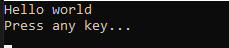
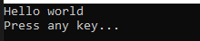
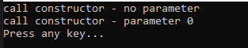

[C#] 10. クラスを作成する方法(コンストラクタ、デストラクタ)
こんにちは。明月です。
この投稿はC#でクラスを作成する方法(コンストラクタ、デストラクタ)に関する説明です。
C#でクラスはプログラムを実行するための最小単位の要素です。つまり、プログラムを実行するために必ず作成しなければならない要素という意味です。
今までの投稿で我々はMain関数の実行関数を作成して実装しました。
しかし、Main関数を作成した構造をみるとMain関数を囲まれているProgramのクラスがあるし、クラスを囲まれているExampleのネームスペースがあります。(参考にネームスペース(Namespace)は省略してもC#のプログラムを作成することでは問題ありません。)
using System;
// Program クラス
class Program
{
// 実行関数
static void Main(string[] args)
{
// コンソールに出力
Console.WriteLine("Hello world");
// 任意のキーを押してください
Console.WriteLine("Press any key...");
Console.ReadLine();
}
}

上の例をみればNamespaceを除いてProgramクラスだけ生成してその中でMain関数を作成してプログラムを最小単位を設定して実装しました。
エラーがなくてちゃんと実行されます。
クラスには作成する構造があります。
public class クラス名
{
// メンバー変数
private int 変数 = 0;
private int[] 変数2;
// デリゲート
public delegate void デリゲート();
// イベント
public event イベントデリゲート イベント;
// コンストラクタ
public クラス名()
{
}
// コンストラクタ(オーバーロード) - 関数と同じ特性
public クラス名(int i)
{
}
// デストラクタ
~クラス名()
{
}
// 関数
public void メソッド名()
{
}
// プロパティ
public int プロパティ
{
get;
set;
}
// インデクサー
public int this[int i]
{
get { return 変数2[i]; }
set { 変数2[i] = value; }
}
}
| クラスの要素 | 説明 |
|---|---|
| コンストラクタ | インスタンスが生成する時(メモリにクラスを割り当て)に呼び出す関数、関数で返却がなしでコンストラクタ名はクラス名と同じです。 |
| デストラクタ | インスタンスがなくなる時(GCによりメモリ上で解除)に呼び出す関数、クラス名と同じで前に「~」を付けること。 |
| メンバー変数 | フィールドというメンバー変数、クラスないで使う変数 |
| プロパティ | 実行する動作は関数と同じですが、プログラムで使う形式は変数と似ている関数(getter、setter) |
| インデクサー | クラスを配列文法を使って使える関数 |
| 関数 | クラスの中で実装する処理 |
| イベント | 特定な重ねている実行単位(queue)で呼び出す時に実行する関数 |
クラスの基本構想は上の通りです。上の各要素は別の投稿で説明してこの投稿ではクラスを作成してインスタンスを生成(クラスをメモリに割り当て)する方法まで説明します。
プログラムは演算処理はCPUで計算すると思えば、計算した後でデータを格納することはメモリです。
つまり、各intやstringのデータタイプでデータを格納することがメモリに格納することです。クラスの中ではメンバー変数があります。つまり、クラスというのは様々なデータタイプを集まった単位だと思えば良いです。
つまり、クラスの中でintタイプのメンバー変数があると思えば、クラスを使うために集まったデータタイプをメモリに割り当て、つまり、4byteの空間を確保することをインスタンス生成といいます。
C#ではインスタンス生成するためにnewキーワードを使います。
using System;
namespace Example
{
// Examクラス
class Exam
{
// 関数
public void Print()
{
// コンソールに出力
Console.WriteLine("Hello world");
}
}
// Programクラス
class Program
{
static void Main(string[] args)
{
// Examクラスのインスタンスを生成
Exam exam = new Exam();
// ExamのPrint関数を呼び出す。
exam.Print();
// 任意のキーを押してください
Console.WriteLine("Press any key...");
Console.ReadLine();
}
}
}

上のソースをみれば、Main関数でExamクラスのインスタンスを生成してPrint関数を呼び出しました。
クラスの構成要素ですべて重要ですが、特にコンストラクタが重要です。
コンストラクタのはインスタンス生成する時に呼び出す関数だと思えば良いです。
コンストラクタも関数の特性なオーバーロード機能多相化(ポリモーフィズム)も使えます。
using System;
namespace Example
{
// Examクラス
class Exam
{
// コンストラクタ
public Exam()
{
// コンソールに出力
Console.WriteLine("call constructor - no parameter");
}
// コンストラクタ
public Exam(int a)
{
// コンソールに出力
Console.WriteLine("call constructor - parameter " + a);
}
}
// Programクラス
class Program
{
// 実行関数
static void Main(string[] args)
{
// インスタンス生成
// パラメータがないコンストラクタを呼び出す。
Exam exam = new Exam();
// インスタンス生成
// intタイプのパラメータがあるコンストラクタを呼び出す。
Exam exam1 = new Exam(0);
// 任意のキーを押してください
Console.WriteLine("Press any key...");
Console.ReadLine();
}
}
}

インスタンス生成する時(new クラス名())でパラメータにより呼び出すコンストラクタが違います。関数と似てますね。
また、クラスにはデストラクタがあります。デストラクタにはインスタンスがなくなる時に呼び出す関数です。
でも、実際にC#にはこのデストラクタは使うことがありません。
理由はインスタンス解除をプログラム上でできなくて、システム側(Framework)のGC(Garbage collection)で自動に解除します。なので、いつ呼ばれるかを予測ができません。
C#がC/C++を継承して生成された言語なので、C/C++の残りがありますね。つまり、C/C++の場合はGCがないので、プログラム上でインスタンス解除する時に呼び出して処理する関数ですが、C#ではGCがあるのでいらない要素です。
ここまでC#でクラスを作成する方法(コンストラクタ、デストラクタ)に関する説明でした。
ご不明なところや間違いところがあればコメントしてください。
- [C#] 17. thisとbaseのキーワード2019/07/10 23:43:56
- [C#] 16. 継承禁止のキーワードのsealed2019/07/10 00:19:18
- [C#] 15. インタフェース(interface)2019/07/10 00:06:17
- [C#] 14. 抽象クラス(abstract)と抽象メソッド(abstract)、そして仮想関数(virtual)2019/07/08 23:04:09
- [C#] 13. クラスの継承と再定義(override)する方法、overrideとnewの差異2019/07/08 22:55:00
- [C#] 12. Staticとアクセス修飾子、そしてカプセル化2019/07/07 23:12:30
- [C#] 11. インスタンスう生成(new)とメモリ割り当て(StackメモリとHeapメモリ)そしてヌル(null)2019/07/07 22:54:13
- [C#] 10. クラスを作成する方法(コンストラクタ、デストラクタ)2019/07/06 00:53:17
- [C#] 9. 関数(Method)とオーバーロード、再帰呼び出し2019/07/06 00:38:29
- [C#] 8. 配列とリスト2019/07/05 00:12:42
- [C#] 7. 制御文2019/07/05 00:05:30
- [C#] 6. 演算子2019/07/04 00:09:43
- [C#] 5. データタイプ変換(キャスト:Cast)とコメント(Comment)2019/07/04 00:01:12
- [C#] 4. データタイプとリテラル(literal)、 Nullable2019/07/02 23:58:43
- [C#] 3. プログラミングの始めと変数と定数を使う方法2019/07/02 23:46:49
- [Java] Redisデータベースを接続して使い方(Jedisライブラリ)2022/02/16 18:13:17
- [C#] Redisのデータベースを接続して使い方2022/02/15 18:46:09
- [CentOS] Redisデータベースをインストールする方法とコマンドを使い方2022/02/14 18:33:07
- [Design pattern] 3-6. ステートパターン(State pattern)2021/11/17 20:04:47
- [Design pattern] 3-5. メメントパターン(Memento pattern)2021/11/16 20:01:36
- [Design pattern] 3-4. イテレータパターン(Iterator pattern)2021/11/15 19:31:28
- [CentOS] Linux環境(CentOS)でCassandra(NoSQL DB)をインストールする方法(DBeaverブラウザでNoSQL使い方)2021/11/12 17:33:58
- [Design pattern] 3-3. コマンドパターン(Command pattern)2021/11/05 17:01:42
- [Window] apache-tomcatでロードバランシング(Load balancing)する方法とセッションクラスタリング（セッション共有）2021/11/05 16:58:45
- [Window] Apacheでmod_jkとmod_proxyの差異、apacheでtomcatのwebsocketのプロキシフォーワードする方法2021/11/05 16:55:05
- [PHP] Apache環境の同じホスト中でPHPとJava(Servlet)を同時に起動、運用する方法2021/11/05 16:52:04
- [C#] 61. ウィンドウフォーム(Window form)でスレッド(Thread)を使い方、クロススレッド問題解決2021/11/04 19:29:51
- [Design pattern] 3-2. 責任の連鎖パターン(Chain of responsibility pattern)2021/11/04 19:27:58
- [Design pattern] 3-1. ストラテジーパターン(Strategy pattern)2021/11/03 18:38:52
- [C#] 60. ウィンドウフォーム(Window form)のイベント設定する方法2021/11/02 21:18:08